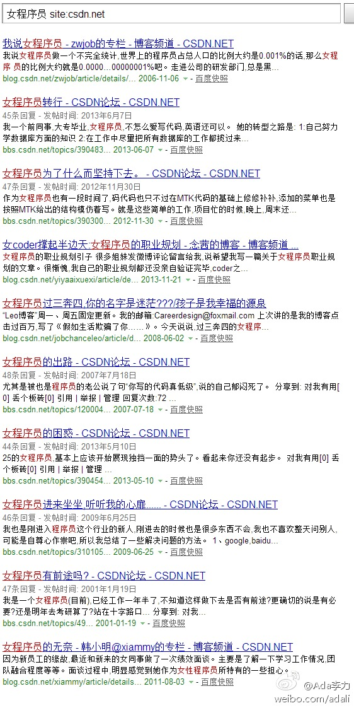

要是拿仓老师做比喻，那真是曲解我想做程序媛圈子的本意了。 女程序员这个群体的智力和智慧能量还远远没有发挥出来呢。 //@萧少聪:要找好代言人的话，比仓老师还火！@Ada李力:有必要建个#女程序员#tag页，在CSDN上搜索这个关键词，30页后还依旧有内容。网页链接 

 女程序员这个群体的智力和智慧能量还远远没有发挥出来呢。 //@萧少聪:要找好代言人的话，比仓老师还火！
女程序员这个群体的智力和智慧能量还远远没有发挥出来呢。 //@萧少聪:要找好代言人的话，比仓老师还火！